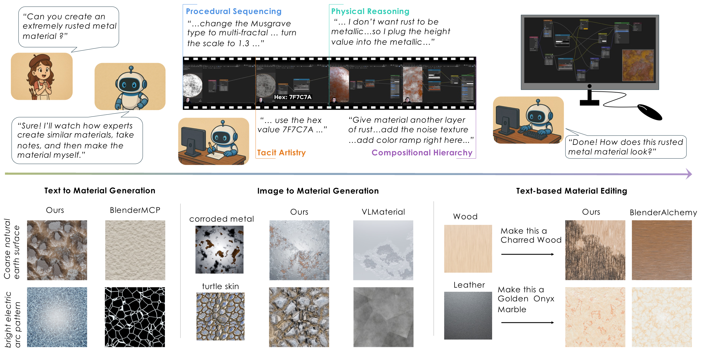

166 procedural materials generated from text prompts — hover any material to rotate it.
Every one is an editable Blender node graph.
Overview
Artists do not learn from finished artworks alone. They learn by
observing how other artists work: the decisions they make, the
techniques they choose, and the reasoning behind those choices.
Material Apprentice is built on the same observation. It formulates
procedural material generation as retrieval-time process
reasoning: rather than synthesizing shader graphs directly, it
retrieves expert demonstrations and reasons over the process artists
used — the construction steps, parameter choices, and design intent
behind them.
Expert workflows are represented as process traces
extracted automatically from Blender tutorial videos. Given a request,
a Process Synthesizer composes a trace aligned with the user's intent,
and a Compiler grounds it into an executable Blender node graph — so
every result is an editable procedural material, not a baked texture.
In an expert study with five professional Blender artists, materials
generated by reflecting process expertise required fewer edits and
matched professional design strategies more closely than graph-only
synthesis. A user study with 150 participants further shows superior
generation and editing performance over prior procedural systems.
The same process-centric reasoning supports text-to-material
generation, image-conditioned synthesis, and text-based editing.
Artist Michael David Mayo reflects on the importance of learning from other artists.
Method
Material Apprentice reasons over process traces derived from expert demonstrations —
such as tutorial videos — capturing procedural sequencing, physical intuition, and the
compositional design strategies artists use while building materials.

Fig. 1: Retrieval-time process reasoning for procedural materials.
(Top) Rather than synthesizing material graphs directly, our approach reasons over process traces
derived from expert demonstrations, such as tutorial videos, capturing procedural sequencing, physical intuition,
and compositional design strategies used by artists.
(Bottom) This process-centric reasoning enables diverse material creation tasks, including
text-to-material generation, image-conditioned synthesis, and text-based editing. Across tasks, materials produced
through process reasoning align more closely with user intent and exhibit stronger visual fidelity than prior
graph-only methods such as BlenderMCP, VLMaterial, and BlenderAlchemy.
Technical overview
Technical overview of Material Apprentice: retrieval-time process reasoning for procedural material generation.
Generated Materials
Blender procedural materials generated by Material Apprentice from the text prompt
shown under each material. Hover to rotate.
Expert Study
We recruited five Blender artists (avg. 7.5 years of procedural-material experience)
and evaluated 60 synthesized process traces from 30 prompts under two retrieval
conditions: our process-trace retrieval versus a
material-graph retrieval baseline. Artists first constructed a
material graph by following each trace, then refined it for up to ten minutes to
better match the prompt, while thinking aloud. We recorded every atomic edit, and an
LLM analyzed the narrations with a fixed rubric to assign pairwise preferences and
editing-friction labels.
Edit effort
Metric
Process
Graph
Node edits ↓
2.42
3.42
Connection edits ↓
5.42
7.42
Parameter tweaks ↓
5.75
4.83
Structural edits ↓
7.84
10.84
Total edits ↓
13.58
15.67
Expert preference
Criterion
Preference
Implementation clarity ↑
100%
Outcome quality ↑
92%
Pedagogical value ↑
84%
Procedural strategy ↑
83%
Parameter control ↑
83%
Final render ↑
83%
Editing sentiment
Signal
Δ (Process − Graph)
Confusion ↓
−0.15
Hesitation ↓
−0.10
Satisfaction ↑
+0.40
Completion ↑
+0.25
Table 1: Expert study results. (Left) Average
refinement edits per material — process-derived graphs need fewer structural and
total edits; the slight increase in parameter tweaks is a favorable shift from
repairing structure to tuning exposed controls. (Middle) Preferences
from artists' think-aloud commentary; final render preference collected after
refinement. (Right) Sentiment deltas after mapping low/medium/high
to 1/2/3 — process-derived graphs reduce editing friction. In fully automatic
generation over 50 prompts, three experts preferred process-conditioned outputs in
72% of paired comparisons.
Try Material Apprentice
Generate your own Blender procedural material without installing any code.
Step 1: Register your email
Material Apprentice is currently available as a research preview.
To prevent abuse and manage compute resources, users must first
register their email address before submitting jobs.
Academic and research users with .edu email addresses
are preferred and are typically approved automatically.
Once approved, you can submit a material prompt below.
Material Apprentice will run the generation pipeline and email you
a download link when the Blender asset is ready.
No local installation required.
Supports text prompts and optional reference images.
Outputs reusable Blender procedural materials.
Typical runtime: 30–45 minutes, though jobs may take longer during periods of high traffic.
Your OpenAI API key stays yours.
Material Apprentice uses your OpenAI API key only to execute the
generation workflow associated with your request.
We do not store, log, or reuse submitted API keys after the job completes.
Typical OpenAI API cost is approximately
$2 USD per generation, although actual cost may vary
depending on prompt complexity, reference image usage, retries, and model usage.
* Material Apprentice is provided as a research preview.
OpenAI API usage is billed directly through your OpenAI account.
While typical generations cost approximately $2 USD, actual costs may vary
depending on model usage, request complexity, retries, and upstream API pricing.
By using the demo, you acknowledge that you are responsible for any API charges
incurred through your OpenAI account.
Citation
@inproceedings{gupta2026materialapprentice,
title = {Reflecting Process Expertise in Procedural Material Generation},
author = {Gupta, Kunal and Joshi, Gaurav and Chen, Yen-Ru and
Jain, Seemandhar and Mehta, Ishit and Chandraker, Manmohan},
booktitle = {European Conference on Computer Vision (ECCV)},
year = {2026}
}